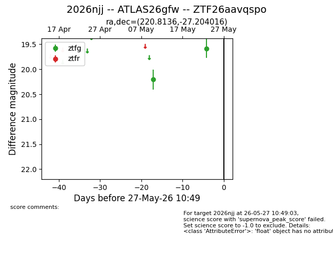
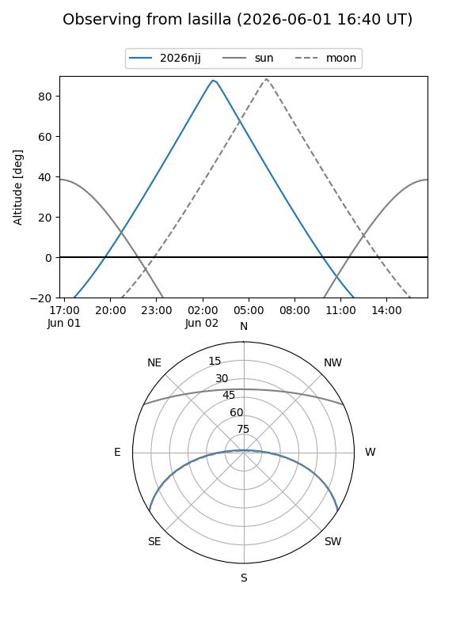
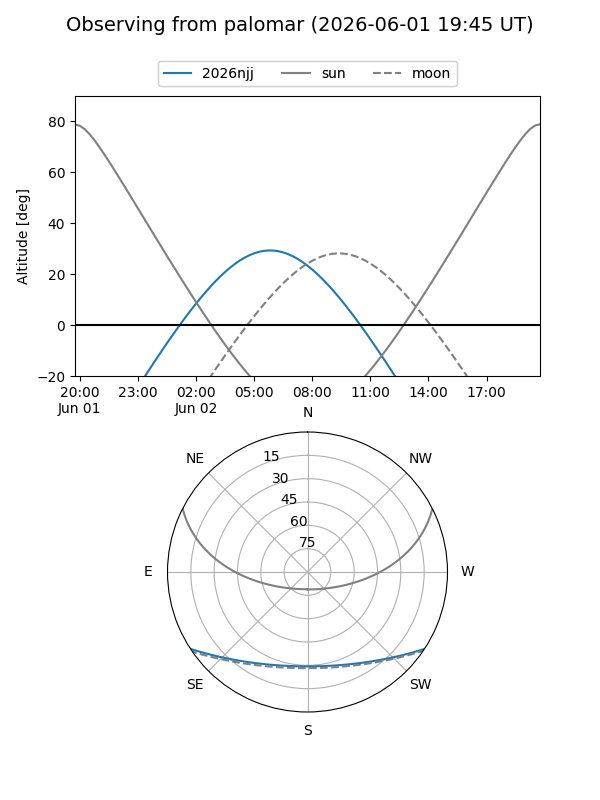

2026njj
Target 2026njj at 2026-05-27 10:55
Aliases and brokers:
lsst-FINK: link
lsst-Lasair: link
lsst-ALeRCE: link
ztf-FINK: link
ztf-Lasair: link
ztf-ALeRCE: link
TNS: link
YSE: link
alt names
ZTF26aavqspo (ztf,fink_ztf)
2026njj (tns,yse)
ATLAS26gfw (atlas)
Coordinates:
equatorial (ra, dec) = 220.8136,-27.20402
equatorial (HMS+DMS) = 14:43:15.27,-27:12:14.46
galactic (l, b) = (331.5186,+29.38852)
Flags:
TNS confirmed: nan
Photometry:
last ztfg=19.58
2 ztfg detections
Lightcurve

Visibility


Additional plots